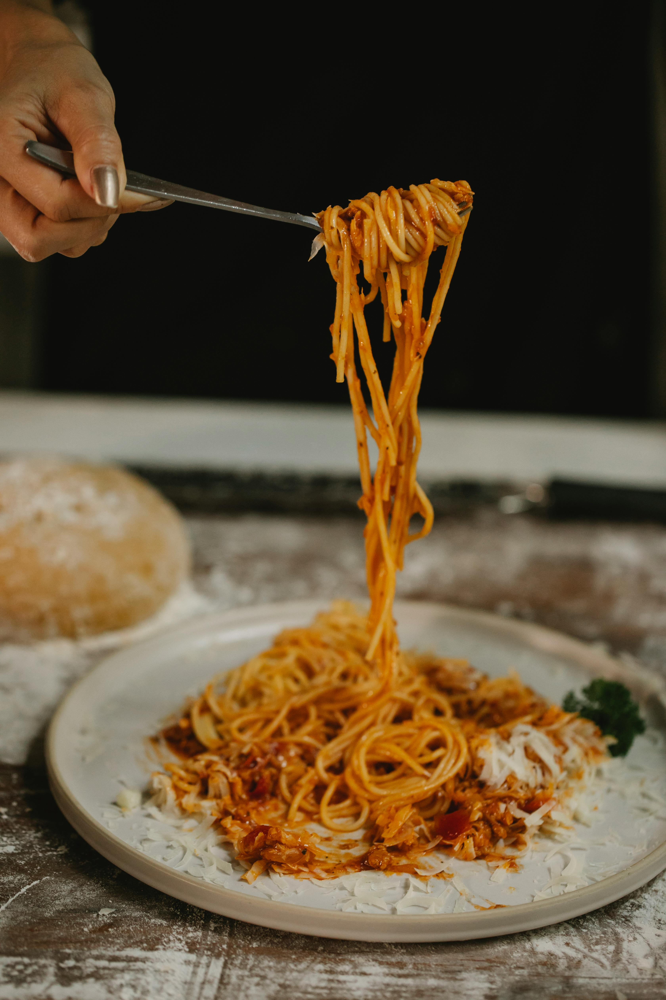

Quick Spaghetti Sauce

Image source: Klaus Nielsen, pexels.com
A simple recipe originally sourced from a site called Mel's kitchen (click here for her site!) and modified overtime for our available ingredients.
We use this sauce for other recipes as well, and it's quite delightful!
Ingredients needed
- Spaghetti (or other pasta) any pack will do
- Ground meat 500 g
- Onion Half a cup. I use one small onion whole.
- Garlic 2-3 cloves
- Tomato paste 2 tablesp
- Dried Basil 1 tsp
- Dried oregano 1 tsp
- Dried thyme 1/4 tsp
- Salt 1/2 tsp
- Black pepper 1/4 teaspon
- Pack of Crushed tomato We use Lidl small packs, OG recipe says 28-ounce can
- Tomato sauce OG recipe says 8-ounce can
- Brown sugar 1-2 tsp
- Soy sauce1-2 tablesp
- Grated cheese of your choice (Optional)
Notes: We usually use our homemade ketchup and tomato sauce but of course bought is fine.
Instructions:
- Prepare the pasta according to the instruction on the label.
- Prepare the meat, onion, garlic on medium-heat. Remember to add salt and pepper! Not a single piece of meat should be pink anymore.
- Drain excess grease
- Stir in tomato paste, basil, oregano, thyme, salt and pepper. Stir for a while over medium-high heat, until the mixture becomes fragnant.
- Add crushed tomato, tomato sauce, brown sugar and soyce. Stir, bring the sauce to simmer and cook for 5-10 minutes.
- Serve with your prepared noodles and enjoy your food!
Go back to the main page